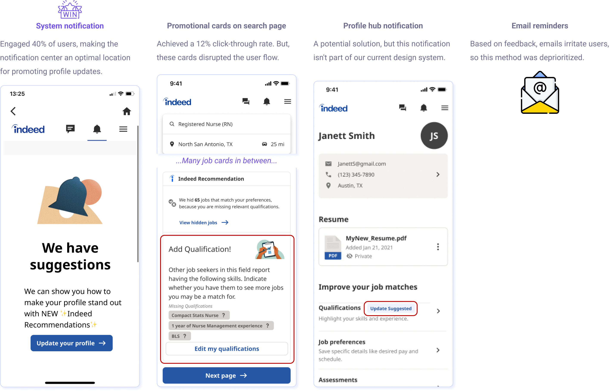

Indeed.com
promote indeed profile updates
My project centered on designing a system to inspire job seekers to keep their profiles up to date, which helps them better match suitable jobs. (Please note, to comply with the non-disclosure agreement, all confidential information within this case study has been obscured. The views expressed here are solely my own and do not reflect the opinions of Indeed.com)
Design team
Product designer (me)
UX researcher
Content designer
My responsibility
Led UX design process
Coordinated with the data team
Deliverables
UX flow and prototype
Strength indicator rules
Company
problem & solution
Business issue & project goal
Only 20% of users have fully completed their profiles. Our goal is to inspire users to complete their profiles for more accurate job matching.
User problem identified from UX research
1. A lack of guidance leaves users unsure of how to update their profiles.
2. The profile page's placement deep within the interface dissuades users from updating their profiles.
Solution
To tackle these obstacles, I've introduced a new user flow that complements the original one, facilitating easier access for profile updates. This revamped system provides targeted guidance to users, advising them to update their profiles based on our big data analytics. Moreover, the inclusion of a strength indicator provides users with an evaluation of their profile's robustness, spurring them to make improvements.
User flow chat
Design (partial)
significance
Aligning with Indeed.com’s mission
Our mission is “To help people get jobs.” Encouraging job seekers to complete and maintain their profiles enables Indeed's data system to provide better job matching, thereby fulfilling our mission.
ux research
Understanding job seekers' perspectives on completing and updating their profiles
Methodology:
My investigation into job seekers' attitudes toward profile updates involved three methods:
- Literature review: Rolled up 46 articles from the Indeed Research Library, examining and integrating findings from pre-existing research in our problem area.
- Usability testing: Observation of user behavior during their job-seeking process.
- Contextual inquiry: Interviewed with 10 job seekers from various professional backgrounds.

Finding 1: Job seekers acknowledge the value of profile updates
Literature review findings:
- Job seekers perceive Indeed Profiles as an opportunity to present a comprehensive and personalized view of their professional selves, enabling them to better appeal to potential employers.
- There's an intrinsic motivation among job seekers to provide detailed information, mainly if it aids in connecting them with better job opportunities - a benefit that also extends to employers.
Contextual inquiry findings:
The purpose really is to see where other people in my age bracket, what they're doing and how I compare. And it kind of motivates me to do more.
– Participant No.1
I know the more that you fill up your profile, the faster they'll find you and the more interest employers will have for you.
– Participant No.9
Finding 2: Lack of guidance discourages users from updating their profiles
Literature review findings:
- The main factors preventing job seekers from providing information are Fear of Missing Out (FOMO), fear of being stereotyped, and potential bias from employers.
- Job seekers are okay with cues or prompts to provide information. However, without proper guidance, their motivation to follow through is lacking.
Contextual inquiry findings:
I also saw several TikToks talking about how,... it's important to add that kind of stuff to your resumes or profiles on job sites.
– Participant No.5
It's like getting social cues from people, reading a lot of articles, being in the know really of what the trends are right now is what makes me re-update my profile.
– Participant No.6
Finding 3: The deep placement of the profile page deters users from updates
Usability Testing Findings:
Job seekers mainly interact with the homepage to search for jobs. The deeply buried profile page is often overlooked during their job search Navigating to the profile page requires 3 clicks, a portal 40% of users think hard to find.
Persona and user journey
User journey
Persona
Summary: pain points
I identified two main barriers that discourage users from updating their profiles:
- The lack of guidance forces users to rely on external resources, slowing the profile updating process.
- The deep placement of the profile page prevents users from realizing the need for profile updates during their job search.
key design direction
Guiding and notifying users
In light of the findings from the user experience research, the core direction for the design improvements centers on eliminating the barriers that users face when updating their profiles. The two key strategies to achieve this are:
- Offering guidance: Assisting users during the profile update process.
- Providing notifications: Alerting users about the necessity of profile updates.
competitive analysis
Investigating guidance strategies in the market
To better understand the existing strategies for profile update guidance in the market, I conducted an analysis of 10 competitors:
4 direct competitors
6 analogous competitors
Finding: Actionable and personalized guidance lacking in current market
The analysis identified an evident market gap: a notable lack of actionable and personalized advice for updating profiles.
Examples of non-tailored guidance
I think they are not helpful because these suggestions are really common, everyone knows to add resume, everyone knows to add phone number.
– Participant No.8
Examples of non-actionable guidance
Seeing a spike in my profile views while I'm looking for a job would interest me because… I know that companies are interested in what I have to share and what my skills are.
– Participant No.6
Key takeaways for design direction
Based on the findings from the competitive analysis, our guidance system should incorporate two main principles:
- Actionability: The guidance should be actionable, offering clear steps that users can follow.
- Personalization: The guidance should be specifically tailored to the needs, experiences, and objectives of each user.
ideation
Addressing pain point 1: absence of guidance for profile updates
I explored several guidance options to aid users in updating their profiles. The most effective solution, as deemed by usability and understandability, was a number and level strength indicator.
Addressing pain point 2: hidden profile page
Despite constraints in adjusting the app's structure, various methods were proposed to prompt users to update their profiles. Notifications emerged as the most effective strategy, with internal data revealing a 40% user engagement rate.
design choices
Mid-fidelity prototypes and design choices
The following two design solutions were further developed into mid-fidelity prototypes based on their capability to meet the user needs identified during the UX research.
Concept A
Concept A is a design solution aimed at aiding users in grasping the qualifications necessary for their target jobs. It offers a lucid depiction of profile strength levels (e.g., Basic, Good, Great) and a numerical comparison of a user's current qualifications against the recommended ones based on our extensive data analysis. This design was chosen for its:
- Simplicity in both visual and conceptual representation.
- Motivational drive, fueled by the contrast between current and recommended qualifications.
- Compatibility with Indeed's brand aesthetics.
Concept B
Concept B revamps the profile updating process into an engaging, game-like experience where users accumulate key fragments. The completion of profile updates rewards users with a fully formed key. This design was chosen for its:
- Innovative approach towards user motivation and behavior alteration.
- While posing a riskier strategy, its potential impact is deemed worth exploring. The design targets managers' preferences for engagement, an aspect that needs to be investigated further.
Data scientist team feedback
Our data scientist team validated the proposed designs, affirming their technical feasibility due to our ability to extract top qualifications for each job, a capability reinforced by their experience with similar projects.
design validation
Rapid iterative testing and evaluation (RITE)
Timeline
Participants
7 one-on-one sessions were conducted with job seekers with a mix of frequencies of updating their indeed profile. (every 1-12 months)
Result 1: Users appreciate the guidance provided for profile updates.
I really like the prototype. There are some things that I will actually change myself based on this. ... The fact that this could be an update, would be great.
– Participant No.5
This job title is actually extremely important to how Indeed goes out and looks for jobs that are parallel to what I’m looking for.
– Participant No.4
Result 2: Concept A emerged as the preferred option due to its simplicity.
The reason I think it's helpful is that little medal there, it's kind of like a measuring tool or a gauge.
– Participant No.6
I'm 41 years old and I'm looking for a job… I don't want to play a game. I want to get this done as quickly as possible.
– Participant No.3
key iterations
Concept A was well-received by users, but some details required iteration to enhance understanding.
Iteration 1: qualification categorization
Iteration 2: profile update entry
Iteration 3: consolidating information
final delivery
Final prototype
Strength indicator system
reflection
Broadening the scope to various occupations
The present design, exemplified through a cashier role, needs expansion to cater to the broad spectrum of job roles. Coordinating with data scientists to understand occupation-specific data is essential to integrate diverse guidance categories into the design. For instance, a 'Certification' section, critical for professions like nursing, should be incorporated for comprehensive and efficient career guidance.
Addressing ethical concerns
Interestingly, while job seekers showed a general unwillingness to lie on their profiles, they seemed open to the idea of stretching their qualifications to fit recommendations. This unveils a potential ethical risk associated with the solution. To mitigate this, it would be prudent to implement a system where users are required to complete a skills assessment or provide more detailed information about their skills before these can be added to their profiles. This can serve as a control mechanism to ensure a more truthful representation of their capabilities.